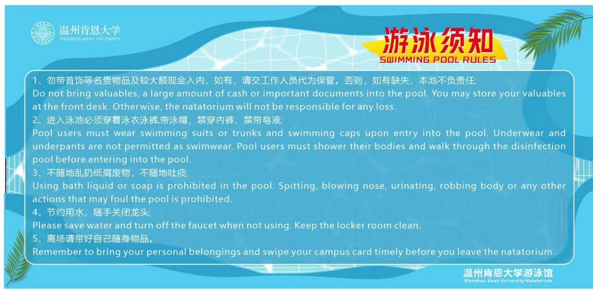

Swimming Pool Operation Notice
In order to enrich the campus sports activities and meet the fitness needs of the whole people,
the swimming pool of our school will open to the teachers and students of the school for trial
operation on September 30, 2022. The instructions for using the swimming pool are hereby notified
as follows
Content
Swimming pool overview
swimming pool opening hours
Entry route
Swimming pool admission process
Swimming pool admission fee
Precautions for swimming pool
Other instructions
1.Swimming pool overview
Wenzhou-Kean University Swimming Hall includes the reception hall, men's and women's locker rooms and the surrounding area
of the swimming pool. The swimming pool is 25 meters long, 15 meters long and 6 lanes wide, with a depth of 1.2-1.5. The swimming
pool is equipped with a standard water circulation system, water disinfection system, and heat pump heating In addition to the system,
fresh air and constant temperature and humidity systems ensure that the hall is warm in winter and cool in summer, which meets the needs
of sports and fitness in all seasons.
2.swimming pool opening hours
The opening hours for the 2023 spring semester are 13:00-21:00 (Monday to Sunday), note: open on demand on statutory holidays.
Entry route
The swimming pool is located in the basement southwest of the track and field field. Please go down the stairs from Gate 1 of the track
and field field and enter the reception hall of the swimming pool.
4.Swimming pool admission process
sign up link
- Use the "Wenzhou-Kean University Client" WeChat applet to make an online appointment
- Scan the code to enter the venue with the reserved QR code, receive the wristband, and
enter the locker room by swiping the face or wristband.。
- After swiping your face and leaving the locker room, scan the QR code to verify and cancel
the reservation code, and return the bracelet.
- Pay on-site to complete swimming (failure to pay will affect follow-up appointments).

5.Swimming pool admission fee
The swimming pool fees are as follows:
| Charge item |
Charge standard |
Charge method |
| Swimming |
10 yuan/90min |
on-site payment |
| swimming cap |
5 yuan/piece |
on-site payment |
| swimming goggles |
5 yuan/piece |
on-site payment |
| slippers |
5 yuan/double |
on-site payment |
Note: Overtime needs to make up the corresponding number of tickets (the price of swimming cap, swimming goggles,
and slippers is added according to the job requirements, not the actual fee of WKU.
6.Precautions for swimming pool
- Follow the entry and exit procedures of the swimming pool, and you need to scan the code to verify the
ticket when entering and exiting the hall.
- Please bring your own swimsuit and swimming cap, those who do not meet the requirements will not be admitted.
- Please do not bring valuables into the swimming pool. The swimming pool will not be responsible for any loss.
- Toiletries, bath towels, and slippers can be used in the locker room and are not allowed to be brought into
the swimming pool area.
- Follow the swimming pool management system, do not play, snorkel or dive in the swimming pool area, and
children must enter the swimming pool accompanied by an adult.
- Receive and return the wristband in time, take good care of swimming pool equipment and equipment, keep
and clean up personal items properly, and build a civilized swimming environment.

7. Other instructions
Each account in the online reservation system can reserve 4 tickets, and family members of faculty and staff can make reservations
for admission to the museum on behalf of the faculty and staff.
Suggestion and Complaint Mailbox: wkusportvenue@wku.edu.cn